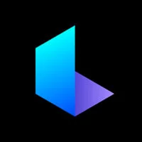
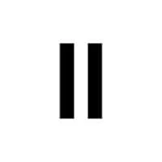
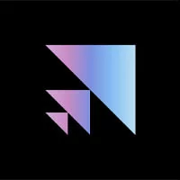
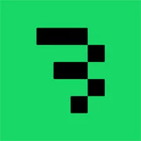
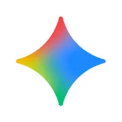
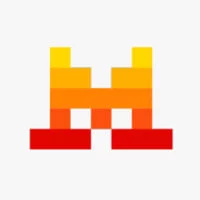
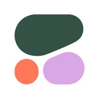

AI API
Premium API solutions for developers building the next generation of intelligent applications.
Featured AI API Providers
聚合与路由平台
WaveSpeedAI
聚合与路由平台主打极速、低延迟与无冷启动的文本、图像及视频等多模态 API 托管聚合
iCreat AI
聚合与路由平台全球领先的全模态API聚合平台，极速和低延迟的API接入网关平台
SiliconFlow (硅基流动)
聚合与路由平台国内/出海领先的 API 聚合服务，深度优化推理加速，支持大量开源与视觉模型
Eden AI
聚合与路由平台欧洲多模态 API 聚合商，整合 500+ 模型并提供强合规与数据安全保障
Atlas Cloud
聚合与路由平台生产级全模态 API 聚合平台，涵盖 DeepSeek、FLUX、Veo、Kling 等模型
Requesty
聚合与路由平台动态 LLM 路由平台，主打自动故障转移（Failover）与多 Provider 负载均衡
Chutes
聚合与路由平台专注于开源社区模型的 Serverless API 托管与快速分发路由
专项多模态与视觉
Fal.ai
专项多模态与视觉极速图像、视频与 3D 生成 API 平台，实时推理性能极强
GoAPI (MJ Proxy)
专项多模态与视觉Midjourney 第三方代理及多模态视觉生成的 API 托管服务

Luma AI API
专项多模态与视觉Dream Machine 视频生成与 3D 场景重建 API

ElevenLabs API
专项多模态与视觉全球领先的高逼真语音合成（TTS）、声音克隆及实时语音 API
高性能极速推理
Cerebras
高性能极速推理基于晶圆级芯片（WSE）的推理云，专攻超低延迟的大模型 API
Together AI
高性能极速推理开源大模型托管、微调与 API 推理服务商，节点丰富且性价比高
Fireworks.ai
高性能极速推理基于 FireAttention 优化引擎，主打长文本、高并发与低延迟推理
SambaNova Systems
高性能极速推理利用 SN40L 芯片提供超大参数模型（如 405B）极速推理的 API 服务

Anyscale (Ray)
高性能极速推理基于 Ray 开源生态构建的分布式大模型 API 托管与部署云
DeepInfra
高性能极速推理极具性价比的开源 LLM 与 Embeddings 模型 Serverless API 服务商
Lepton AI
高性能极速推理由业内专家打造、极简且高效的 Serverless AI API 部署与托管平台

Baseten
高性能极速推理专注于将开源模型与自定义 Workflow 转化为高可用生产级 API
Novita AI
高性能极速推理提供海量 GPU 算力驱动的 LLM 与 Stable Diffusion 极速 API
旗舰模型原厂
OpenAI API
旗舰模型原厂行业标杆，提供 GPT-4o、o1/o3/GPT-5 系列、DALL-E 及 Whisper

Google Gemini API
旗舰模型原厂拥有超长上下文（2M+）与原生多模态理解能力的官方 API

Mistral AI API
旗舰模型原厂欧洲顶尖 AI 厂商，提供高性价比的高性能开源与商业闭源模型 API

Cohere API
旗舰模型原厂专注于 Enterprise RAG、搜索与 Embedding / Rerank 的 API 平台
Stability AI API
旗舰模型原厂Stable Diffusion (SD3/FLUX 合作) 及 SVD 视频生成的官方 API
云巨头与企业级
AWS Bedrock
云巨头与企业级亚马逊全托管 AI 网关，一站式调用 Anthropic、Meta、Cohere 等
Azure OpenAI Service
云巨头与企业级微软企业级 OpenAI API 托管，保障合规、合规数据隐私与 SLA
Cloudflare Workers AI
云巨头与企业级依托全球边缘计算网络，提供低延迟、轻量级的 AI 模型 API 托管
NVIDIA NIM
云巨头与企业级英伟达官方微服务架构，优化企业私有化硬件上的推理 API 性能
Hugging Face API
云巨头与企业级基于全球最大开源社区，提供开箱即用的 Inference Providers API
企业级/开源网关
LiteLLM Gateway
企业级/开源网关业内最受欢迎的统一 OpenAI 格式代理网关，支持自建私有 API
Portkey
企业级/开源网关专注于 LLM API 路由、可观测性（Observability）与成本监控
Helicone
企业级/开源网关专注于 LLM API 监控、缓存、Prompt 管理与分析的开发者平台
Kong AI Gateway
企业级/开源网关传统 API 网关巨头的 AI 扩展包，适合企业集中管控大模型流量
TrueFoundry
企业级/开源网关专为中大型企业打造的私有化 AI API Gateway 与 LLM Ops 平台